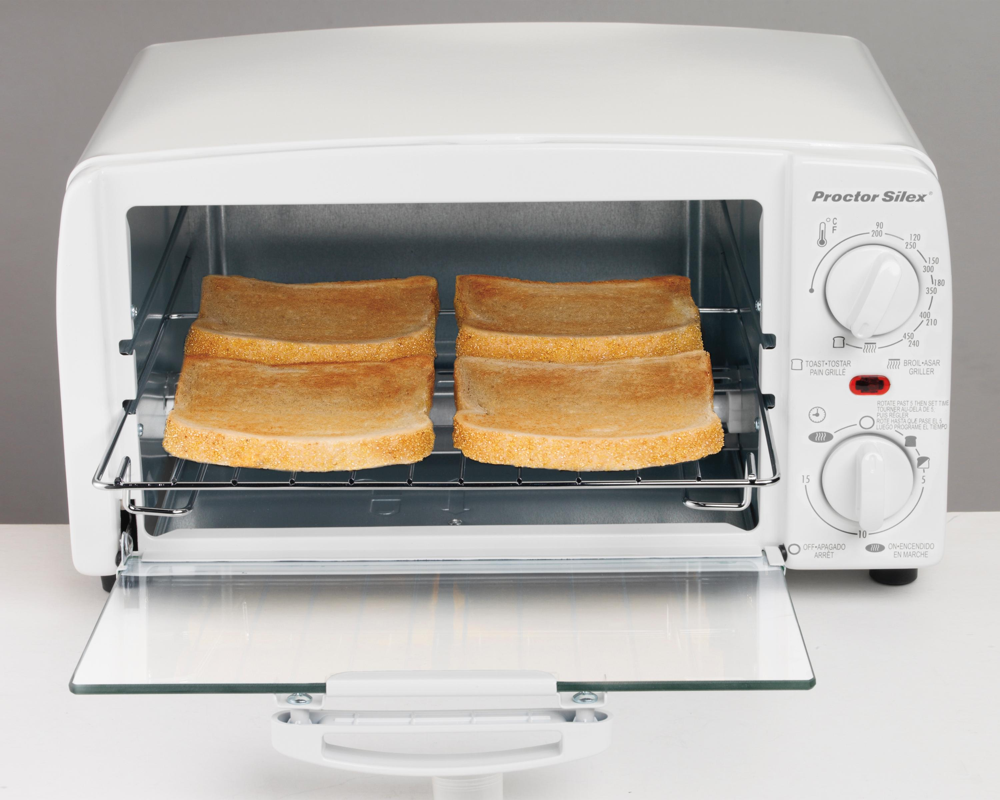
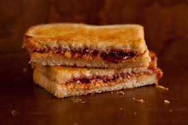

Peanut-Butter and Jelly Sandwich

Ingredients
- Peanutbutter
- Jelly
- 2 Slices of bread
-
Step 1:
Toast the two slices of bread in toaster oven at 350 degrees for 4 minutes.
 -
Step 2:
Spread peanutbutter on one side of each piece of toast, then spread the jelly on top of the peanutbutter for one or both of each toast.

-
Step 3:
Put the two pieces of bread back together, cut diagonally, and serve.
